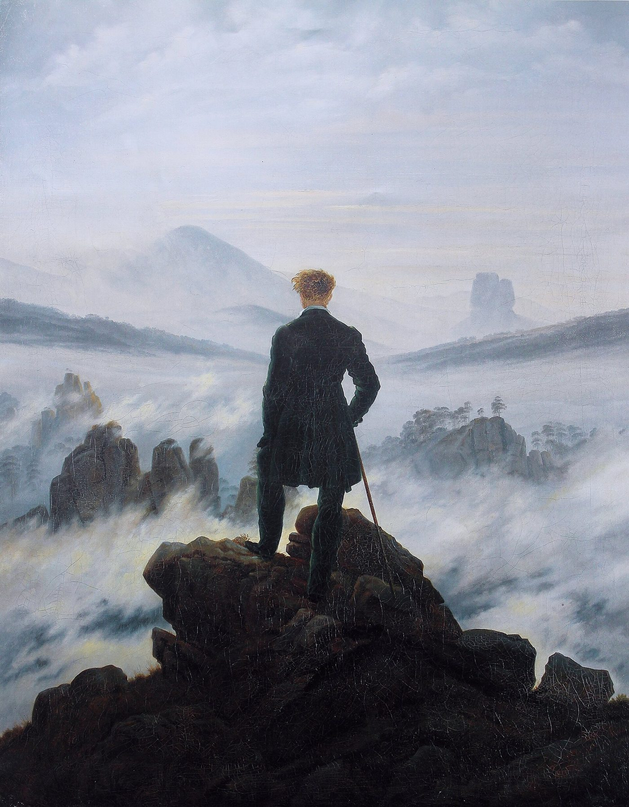

six stages of spiritual awakening
目覚めの六つの段階
世界が輝いて見えた時期が終わって、いまは何も感じない。導きが止まった。自分はどの辺りにいるのか。いつまで続くのか。この分野で語られている六つの段階と、それぞれのおおよその長さ、三つの通り抜け方。禅の「十牛図」に、八百年前から同じ形があること。

あの時期は、木も、鳥も、すれ違う人も、すべてがつながって見えた。しるしが次々に来て、導かれている気がした。それが、終わった。いまは、何も感じない。導きが止まった。神と切り離された気がする。自分は何か間違えたのだろうか。そして、これはいつまで続くのか。
教師のもとには、この問いが絶えず届くようです。それに答えたある動画は、300万回以上見られています。このページでは、その六つの段階と、それぞれのおおよその長さ、三つの通り抜け方を見ます。そのあとで、禅が八百年前に十枚の絵で示した「悟りへの道」に、同じ形があることを見ていきます。
先に、三つの断り
第一に、この順番で進むとは限らないとされます。多くの相談者と、この段階を整理した教師自身がたどった順に並べたもので、進む順は人によって違うと説明されています。第二に、段階は重なることがある。二つを同時に経験する、にじみ合う、ということが起きるとされます。第三に、それぞれの長さは目安であって、文字どおりに受け取るものではないと念が押されています。目覚めの進み方はひとりひとり違うので、長さを数えることは本当はできない、という理由です。
六つの段階
魂が、その人のなかのスイッチを入れる、と説明されます。入り方は二つ。ひとつは混沌で、人生が崩れる、関係が壊れる、事故、病気の診断といった形で訪れます。足元の絨毯を引き抜かれ、その痛みのなかで目覚める。この段階を整理した教師も、前触れのない結婚の崩壊がきっかけだったと、自分の体験として話しています。このとき自我は支配を失う。自我は一度も何も制御できていなかったと、観ている側の自分に分かるからだ、とされます。
もうひとつは自然に訪れる形です。マイケル・シンガーは居間の床に座っていて、苦しみも痛みもなく、ただ目覚めたと語られます。こうした例は増えていて、痛みを必要とする人はいないのだから、そちらへ向かうほうがよい、と述べられています。
どちらの入り方でも、起きることは同じだとされます。深い問いが始まる。「人生には、これ以上の何かがあるはずだ」。眠りから覚めて、初めて世界をそのまま見る、という説明です。
木と、鳥と、花と、人と、すべてとつながっていると感じる時期だとされます。恍惚、喜び、わくわく。何年も感じていなかった感情に浸される。これは心（ハート）が目覚めはじめているからで、多くの人にとって心が初めて動きだす瞬間だと説明されます。同時に、導かれていると感じる。しるし、数字の並び、シンクロニシティ。霊の世界はいつも助けようとしていたのに、眠っているあいだは聞こえなかっただけだと気づく、という語り方です。直観が開き、隠れていた才能が表に出てくるとも言われます。
この段階を離れたい人はいない、とされます。これが永遠に続き、あの重い感情はもう二度と来ないと思ってしまう。それは少し無邪気だった、とこの段階を語る教師も自分の経験として振り返っています。
この段階は「大いなる浄化」とも、「自我の暗夜」とも呼ばれます。魂が、この人生で癒すべきものをすべて表に上げてくる時期だとされます。この人生のものだけでなく、前の人生から持ち越したものまで含む、という説明です。だから、いちばんつらい。抑うつ、絶望、不安、上下も左右も分からない。死んでいくように感じる——そしてある意味では本当にそうで、古い自分が死んでいるのだ、と語られます。
全員が通るわけではないものの、相談に訪れた何千人の大多数は何らかの形で通る、とされます。長さは数か月から数年。この段階を語る教師自身も、ひとつではなく複数の暗夜を通り、それがなければいまの自分はいない、どれひとつ違っていてほしいとは思わない、と話しています。（魂の暗夜のページに、くわしく書きました）
暗夜が終わると、誰もいない土地に出るとされます。古い自分と新しい自分、古いエネルギーの体系と新しいそれの、あいだ。宇宙がすべての扉を閉める。「導きが止まった。声が聞こえない。神から切り離された。前の至福はどこへ行った」——この段階では、多くの人がそう言うと説明されます。至福の段階へ戻ろうと、爪を立ててもがく。
この段階は「大いなる休息」とも呼ばれます。宇宙がさなぎに閉じ込めている状態で、暗夜であれだけの作業をしたのだから、次に動きだす前に体系を休ませなければならない、という説明です。だから、もう蹴ったり叫んだりしない。扉が閉まっているなら、閉まっている。空白にいる、休息の段階にいる、さなぎに包まれることを許す——そう受け取れると、不安が深い静けさに変わるとされます。疲れているけれど、穏やか。そして、古い荷物が抜けた鏡のなかに、初めて「はじめまして」と言える自分が見えはじめる、と語られます。
木のたとえで説明されます。最初の段階では枝を空へ空へと伸ばしていた。この段階では根を土の深くへ下ろして、大きくなった木を支える。少し大人になった状態だ、という言い方です。至福の段階が自由を初めて味わう十代なら、ここは成人にあたる。至福も、悲しみも、怒りも、愛も、どれを感じていても大丈夫だという知が根づくとされます。目覚めのあいだ学んだことを、日常の暮らしに持ち込む段階でもあります。暗夜では隠遁したくなり、至福では自然のなかでひとりでいたくなるのに、ここでは人の世界へ戻りたくなる。準備ができたからだ、と説明されます。重い人のそばにいても揺れず、壊れやすい花ではなくなる、とも言われます。
そして、至福で感じたつながりが戻ってくるとされます。ただ、今度はこの現実に根づいたつながりです。雲の上で「すべてとひとつ」と興奮するのではなく、目の前の人にも物語があり、皆できるだけのことをしていると分かって、大目に見られるようになる。根が深いほど体系は強く、引き寄せる力も強くなる。空白では何も起きなかったのに、ここではものごとが簡単に起きはじめる、という説明です。
ジョーゼフ・キャンベルの言う英雄の旅を、ひとめぐりした状態だとされます。至福を通り、暗夜を通り、空白を通り、根を下ろした。ここまでにたいてい二、三年。古い自分を手放して、新しい人になっている。根づいて力のある人は、自分の目的と深くつながっている、という説明です。
使命の全体を知っている必要はない、とされます。使命の全容は人生の終わりにしか分からないと語る教師もいます。使命は振り返ってしか見えないものだから、という理由です。細部は知らなくても、自分が大きな目的を持ってここにいることは知っていて、毎日一歩ずつそちらへ進む。この段階で、人は人生に約束をするとされます。何が起きても、魂の道に従う、と。
何をすればよいと言われているのか
2．心（ハート）と一緒に働く — 心は体系の中心のチャクラであるだけでなく、偉大な癒し手であり、暗夜のあいだ癒しているのは心だ、とされます。そして魂の座でもある、という説明です。具体的には、胸骨を軽く叩く、瞑想中に両手を胸に置く、といったことが挙げられます。心の言葉は言葉ではなく感覚と感じで来るので、注意を胸に置いておく。そして頭を静める。瞑想でも、踊りでも、自然のなかで過ごすことでもよいとされます。毎日、頭を静めて心へ降りる練習をしなければ、どれが頭でどれが心か区別がつかない、と述べられています。
3．頭から離れる — 暗夜のあいだ、前世の記憶が暴力的な形で襲ってきたと語る教師もいます。頭から離れることを覚えなければ、文字どおり気が狂っていた、という振り返りです。人は、すべてを観ている意識であるというのがその見方で、心拍を観るように思考も距離を置いて観られる、思考そのものではない、と説明されます。方法は二段階。まず、思考を雲のように通り過ぎさせる。それが恐れの思考なら、次に向け直す。頭が絶えず「死にかけている、病気だ、統合失調症かもしれない」と言い続けるとき、それを観て、大丈夫だと自我をなだめ、手を胸に置いて、反対のことを言う——魂は何をしているか分かっている、すべてはよい、歩むべき道を歩いている、と。向け直しは、否定に傾いた脳を楽観に傾いた脳へ配線し直すものだ、とされます。
頭が小さなことに固着して、大きな物語を作っているときの練習として紹介されています。座って目を閉じ、両手を胸に置いて、心の光を感じる。光が胸から出て、自分を包む泡になる。泡が部屋いっぱいになり、建物いっぱいになり、町を、国を、大陸を包み、やがて宇宙空間に浮かんで、青い地球を見下ろしているところまで広がる。その沈黙のなかで、頭が作った問題は落ちていく、と説明されます。
八百年前の、十枚の絵
「目覚めには段階がある」という考え方は、この考え方が作ったものではありません。禅には、悟りへの道を十枚の絵で示した、よく知られたものがあります。
12世紀の中国の禅僧、廓庵（かくあん）によるものが日本では最もよく知られています。牛を「本来の自己」にたとえ、それを探す童子の姿で、十の段階を描いています。
1．尋牛（じんぎゅう） — 牛を探しに出る。何かが足りない、と気づく
2．見跡（けんせき） — 足跡を見つける
3．見牛（けんぎゅう） — 牛の姿を見る
4．得牛（とくぎゅう） — 牛をつかまえるが、牛は暴れる
5．牧牛（ぼくぎゅう） — 牛を飼いならす
6．騎牛帰家（きぎゅうきか） — 牛の背に乗って、笛を吹きながら家へ帰る
7．忘牛存人（ぼうぎゅうそんにん） — 牛のことを忘れ、人だけがいる
8．人牛倶忘（にんぎゅうぐぼう） — 人も牛も忘れる。ただの円が描かれる
9．返本還源（へんぽんげんげん） — 源に還る。川が流れ、花が咲いている、ただそれだけの絵
10．入鄽垂手（にってんすいしゅ） — 町へ入り、手を垂れる。悟った人が市場へ戻り、人々のなかで暮らす
上の六段階と並べると、形が見えてきます。「尋牛」は、「人生にはこれ以上の何かがあるはずだ」という目覚め。「見牛」で初めて牛を見る喜びは、至福。「得牛」で暴れる牛と格闘するのは、暗夜。「人牛倶忘」の、ただの円——人も牛もない——は、空白です。「返本還源」の、川が流れ、花が咲いているだけの絵は、根を下ろすこと。そして「入鄽垂手」——町へ戻って、人々のなかで手を差し伸べる——は、六段階の目的と使命、キャンベルの英雄の旅の「帰還」と、同じ場所にあります。
十牛図で興味深いのは、悟りが八番目の「何もない円」で終わらないことです。そのあとに、源へ還る絵と、町へ戻る絵が続く。雲の上にいることは、道の途中であって、終わりではない。「至福は十代で、根を下ろすのが成人」「人の世界へ戻りたくなる」と言われているのは、この十枚目の絵のことです。
段階として見ることを、精神医学はどう扱ったか
「目覚めの途中の苦しさは、病ではなく、通過点である」という見方は、この言葉を語る人たちだけのものではありません。精神医学の側にも、同じことを言おうとした流れがあります。
スピリチュアル・エマージェンシー
チェコ生まれの精神科医スタニスラフ・グロフと、妻のクリスティーナ・グロフが1989年の共著で示した言葉です（Grof, 1989）。ふだんとは違う意識の状態が、感情や知覚や体の症状をともなって現れることがある。それは心の病ではなく、発達の危機として通る段階なのではないか、という主張です。
グロフは、この危機を十の型に分けています。シャーマンの危機、クンダリーニの覚醒、一体感の体験、中心へ戻ることによる心の立て直し、心が開くことによる危機、前世の体験、ガイドとの交信やチャネリング、臨死体験、未確認飛行物体との遭遇の体験、憑依状態。上に挙げた六つの段階と、名前は違っても重なる部分があります。
治療については、鎮静剤は症状を抑えるだけで体験そのものを断ち切ってしまい、結果として人格をやせさせる、と述べています。グロフ夫妻は、専門家だけでなく家族や友人が支えられる場所として、この危機のための支援センターを構想しました。
ここで気をつけたいのは、これが精神医学の主流の説ではないという点です。グロフはトランスパーソナル心理学と呼ばれる領域の人で、その枠組み自体に批判もあります。ただ、この流れが、診断の手引きに実際の変化をもたらしました。
診断の手引きに入った「宗教的または霊的な問題」
アメリカ精神医学会の診断の手引き（DSM）には、「宗教的または霊的な問題」という分類があります（Lukoff ほか, 1998）。信仰を失う、あるいは問い直すことにともなう苦しさ、新しい信仰に移ることで生じる問題、価値観そのものへの問いなどが例として挙げられています。
これは病名ではありません。治療の場で扱う対象ではあるが、心の病とはしない、という置き方です。この分類が入ったこと自体が、苦しい霊的な体験を病でないものとして認めた点で、大きな変化だったとされます。2022年の最新版にも残っています（Lu, 2023）。
提案したデイヴィッド・ルコフらは、神秘的な体験が、事情を知らない人からは精神病に見えることがあると述べ、見分けるための目安も挙げています。体験の前まで生活が保たれていたか、症状が三か月以内に急に始まったか、きっかけになる出来事があったか、本人が体験を肯定的に受け止めているか。この四つが揃うほど、病ではない側に近いという見立てです（Lukoff ほか, 1998）。
六つの段階も、十牛図も、この分類も、「途中である」という同じ形を持っています。違うのは、誰がそう言っているかと、その言葉が何のために作られたかです。段階の話は先の見通しを与えるために、診断の分類は、苦しんでいる人が病名をつけられずに助けを受けられるようにするために作られました。
近いことを言っているもの
- 覚醒 — 一つ目の段階の中身。「自分がおかしくなったのではないか」「まわりの人が遠くなる」。別のページで扱っています
- 魂の暗夜 — 三つ目の段階。十字架のヨハネの原義と、精神医学の側の見方。別のページで扱っています
- グラウンディング — 五つ目の段階の、木と根のたとえの実践。別のページで扱っています
- 魂の使命 — 六つ目の段階。「使命は振り返ってしか見えない」。別のページで扱っています
- 十牛図 — 上に書いた、禅の側の十段階
出典・参考
- Christina Lopes, The 6 Life-Changing Stages Of Spiritual Awakening [Which One ARE YOU In?]（YouTube）六つの段階とその長さ、三つの方法、「ホバー」の練習。引用は字幕による。彼女のいちばん見られている動画（300万回以上）
- 十牛図（日本語版ウィキペディア）禅で悟りへの道を十枚の絵で示したもの（12世紀、廓庵）
- Hero's journey（英語版ウィキペディア）ジョーゼフ・キャンベルの「英雄の旅」（1949年）。ロペスが段階の全体をこれになぞらえている
- Stanislav Grof・Christina Grof『Spiritual Emergency: When Personal Transformation Becomes a Crisis』1989（Internet Archive）「スピリチュアル・エマージェンシー」という枠組みと、十の型
- Stanislav Grof・Christina Grof の同書の紹介（International Journal of Transpersonal Studies）「病ではなく発達の危機」という主張、鎮静剤への懸念
- David Lukoff, Francis Lu, Robert Turner「From Spiritual Emergency to Spiritual Problem: the Transpersonal Roots of the New DSM-IV Category」Journal of Humanistic Psychology, 1998診断分類「宗教的または霊的な問題」が入るまでの経緯
- David Lukoff ほか「DSM-IV Religious and Spiritual Problems」分類の本文と、精神病と見分けるための目安
- Francis Lu「Where Do Religion and Spirituality Appear in DSM-5-TR (2022)?」（デューク大学）最新版でも分類が残っていることの確認
関連することば
 astral projection / out-of-body experienceアストラルトラベル眠り際に体が動かず、天井近くから自分を見た気がした。幽体離脱とは何かを、この分野の実践者の言葉、神経科学者・心理学者による体外離脱の説明、研究者ディーン・シールズの文化研究を引きながら整理します。戻れない不安、眠りや金縛りとの関係、5段階の方法と注意点、生霊・あくがるも解説します。
astral projection / out-of-body experienceアストラルトラベル眠り際に体が動かず、天井近くから自分を見た気がした。幽体離脱とは何かを、この分野の実践者の言葉、神経科学者・心理学者による体外離脱の説明、研究者ディーン・シールズの文化研究を引きながら整理します。戻れない不安、眠りや金縛りとの関係、5段階の方法と注意点、生霊・あくがるも解説します。 ascension / 5Dアセンション疲れが抜けず、動悸や人間関係の変化が気になる。アセンション症状とは何かを、六つ・31とも語られる変化の一覧、並木良和や考古天文学者アンソニー・アヴェニの言葉、精神医学の見方とともにたどり、5次元や地球変容の語りの来歴、受診が必要な症状との線引きを整理します。
ascension / 5Dアセンション疲れが抜けず、動悸や人間関係の変化が気になる。アセンション症状とは何かを、六つ・31とも語られる変化の一覧、並木良和や考古天文学者アンソニー・アヴェニの言葉、精神医学の見方とともにたどり、5次元や地球変容の語りの来歴、受診が必要な症状との線引きを整理します。 ascendant / rising signアセンダント自分の星座より、周囲から受け取られる印象のほうがしっくりくる。アセンダント（上昇宮）とは、生まれた瞬間に東の地平線にあった星座で、第一印象や世界との接点としてどう捉えられるのかを解説します。CHANIとウィキペディアの説明を引き、太陽・月との違い、出生時刻と出生地が必要な理由、ビッグスリーでの位置づけを紹介します。
ascendant / rising signアセンダント自分の星座より、周囲から受け取られる印象のほうがしっくりくる。アセンダント（上昇宮）とは、生まれた瞬間に東の地平線にあった星座で、第一印象や世界との接点としてどう捉えられるのかを解説します。CHANIとウィキペディアの説明を引き、太陽・月との違い、出生時刻と出生地が必要な理由、ビッグスリーでの位置づけを紹介します。 affirmationsアファメーション「私は豊かだ」「私は愛されている」と毎朝唱えている。でも、唱えるたびに、嘘をついている気がする。効いているのか、逆効果なのか。この分野で「これを先に身につけないと効かない」と言われている一つのこつと、38の言葉。この言葉の来歴（1910年、1984年）、日本語の「言霊」、そして心理学が2009年に見つけた「効く人と、逆効果になる人」の違い。
affirmationsアファメーション「私は豊かだ」「私は愛されている」と毎朝唱えている。でも、唱えるたびに、嘘をついている気がする。効いているのか、逆効果なのか。この分野で「これを先に身につけないと効かない」と言われている一つのこつと、38の言葉。この言葉の来歴（1910年、1984年）、日本語の「言霊」、そして心理学が2009年に見つけた「効く人と、逆効果になる人」の違い。 how to pray祈り方祈りたいのに、誰に何を言えばいいのか分からない。祈りを「宇宙との対等な会話」と語るこの分野の教師の言葉から、言葉の置き方や手を合わせる形をたどり、日本語版ウィキペディアの記述とコクラン総説などの研究が示す範囲を整理します。
how to pray祈り方祈りたいのに、誰に何を言えばいいのか分からない。祈りを「宇宙との対等な会話」と語るこの分野の教師の言葉から、言葉の置き方や手を合わせる形をたどり、日本語版ウィキペディアの記述とコクラン総説などの研究が示す範囲を整理します。 inner childインナーチャイルド恋愛で、相手の一言に急に黙り込んでしまう。インナーチャイルドを手がかりに、幼少期の安心感と親しい関係での反応のつながりを整理します。精神科医・相澤雅子、心理カウンセラー・衛藤信之、心理学者ニコール・ルペラらの語りを引き、向き合い方、心理療法との重なり、科学的な限界まで解説します。
inner childインナーチャイルド恋愛で、相手の一言に急に黙り込んでしまう。インナーチャイルドを手がかりに、幼少期の安心感と親しい関係での反応のつながりを整理します。精神科医・相澤雅子、心理カウンセラー・衛藤信之、心理学者ニコール・ルペラらの語りを引き、向き合い方、心理療法との重なり、科学的な限界まで解説します。